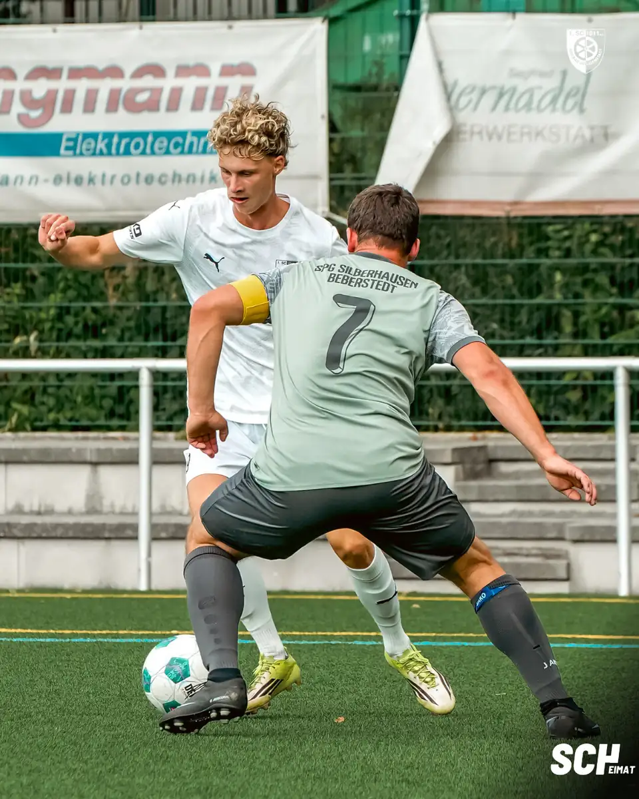
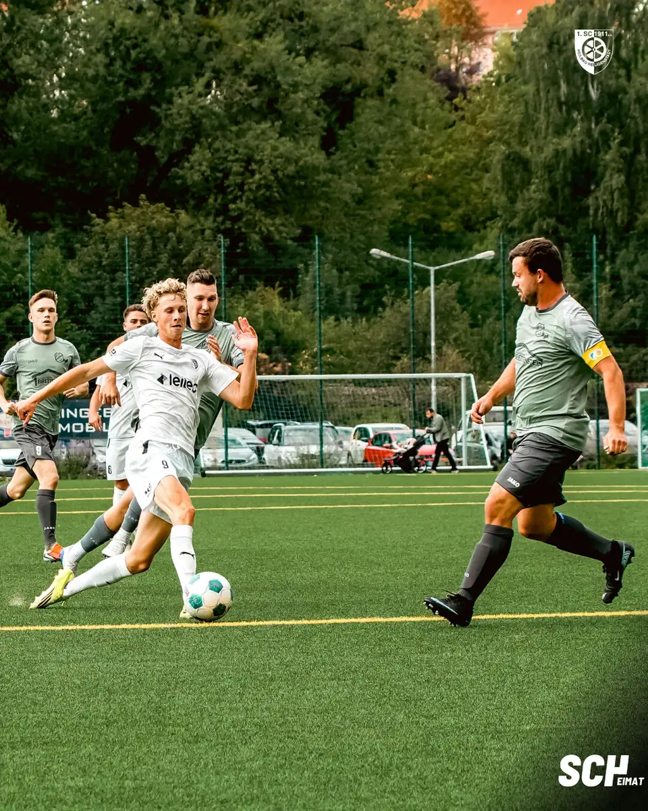
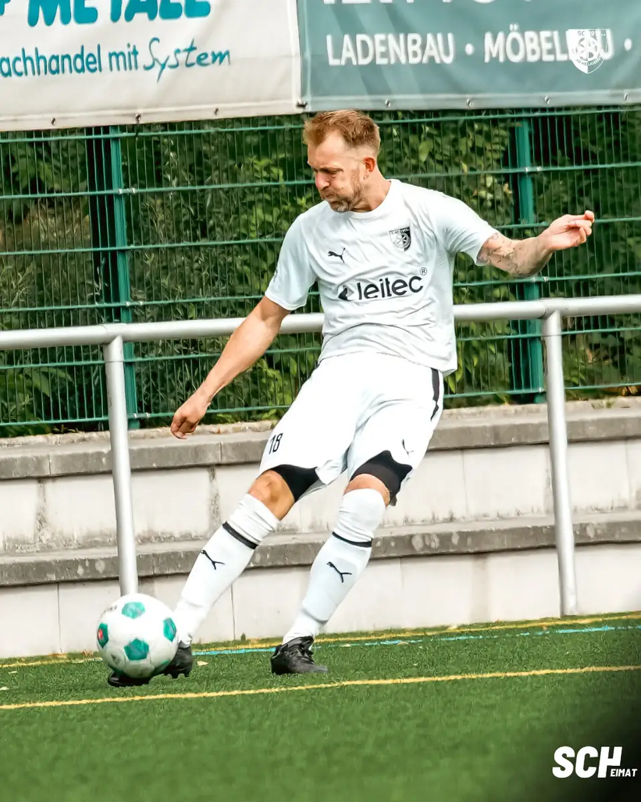
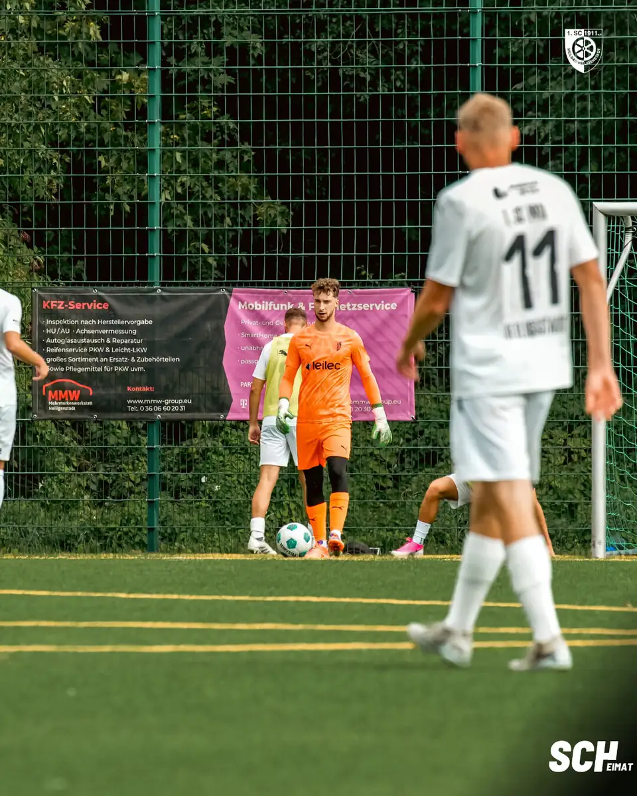
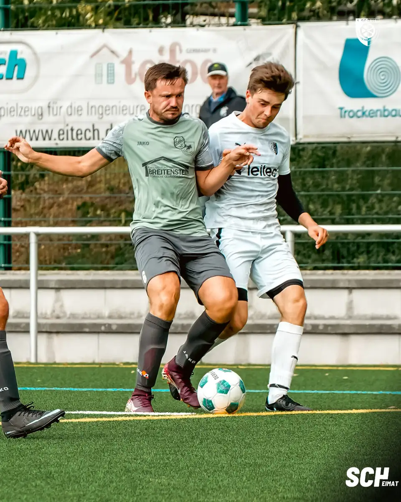

Papst-Elf startet mit verdientem Heimsieg in die neue Saison
Der Auftakt ist gelungen. Unsere zweite Mannschaft hat ihr erstes Punktspiel der neuen Kreisoberliga-Saison gegen die SG VfB 26 Beberstedt mit 3:1 (1:1) gewonnen. Vor 89 Zuschauern war die Papst-Elf über weite Strecken die spielbestimmende Mannschaft, musste nach dem schnellen Ausgleich der Gäste aber zunächst Geduld beweisen. Nach der Pause sorgten Colin Pingel und Thomas Kahlmeyer innerhalb von zehn Minuten für die Entscheidung.
Viel Ballbesitz, zunächst aber ohne Ertrag
Nach dem deutlichen 7:0-Erfolg in Rengelrode im Kreispokal ging es für unseren Kreisoberligisten erstmals in dieser Saison um Punkte. Daniel Papst vertraute dabei auf eine Mannschaft, die früh versuchte, das Spiel an sich zu ziehen. Die Blau-Weißen hatten mehr vom Ball und bestimmten über weite Strecken das Geschehen. Beberstedt stand dagegen kompakt und versuchte, unserer Mannschaft möglichst wenig Raum zu überlassen. So spielte sich vieles in der Hälfte der Gäste ab, ohne dass sich daraus sofort zwingende Möglichkeiten entwickelten. Die Geduld zahlte sich nach 22 Minuten erstmals aus. Jonas Grimm brachte den SCH II mit 1:0 in Führung und belohnte damit die bis dahin spielerisch bessere Vorstellung. Lange hielt der Vorsprung allerdings nicht.
Beberstedt antwortet nur drei Minuten später
Die Gäste brauchten lediglich drei Minuten für ihre Reaktion. In der 25. Minute traf Kevin Blache zum 1:1 und stellte die Partie damit wieder auf Anfang. Für die Papst-Elf war der Ausgleich ein kleiner Dämpfer in einer ersten Hälfte, in der sie spielerisch die größeren Anteile besaß. Der SCH ließ sich davon jedoch nicht aus dem Konzept bringen. Unsere Mannschaft blieb am Ball, suchte weiter den Weg nach vorne und versuchte, die Beberstedter Defensive auseinanderzuziehen. Ein weiterer Treffer gelang vor der Pause nicht mehr. So ging es trotz der spielerischen Vorteile mit einem 1:1 in die Kabinen. Das Ergebnis spiegelte zu diesem Zeitpunkt allerdings nur bedingt wider, wie sich die Partie auf dem Platz entwickelt hatte. t.
Pingel bringt den SCH wieder nach vorn
Nach dem Seitenwechsel benötigte die Papst-Elf nicht lange, um die Verhältnisse wieder geradezurücken. Fünf Minuten waren im zweiten Durchgang gespielt, als Colin Pingel einnetzte. Sein Treffer zum 2:1 in der 50. Minute gab der Papst-Elf genau den Schub, den sie nach dem Remis zur Pause brauchte. Nun wurde der Druck größer. Der SCH spielte weiter nach vorne und ließ Beberstedt immer weniger Möglichkeiten, selbst für Entlastung zu sorgen. Während die Gäste in der ersten Hälfte nach dem Rückstand noch schnell eine Antwort gefunden hatten, gelang ihnen das diesmal nicht.
Stattdessen legten die Blau-Weißen nach.
Kahlmeyer sorgt für klare Verhältnisse
In der 60. Minute erhöhte Thomas Kahlmeyer per Kopf auf 3:1. Damit hatte unsere Mannschaft innerhalb von zehn Minuten aus dem offenen 1:1 eine komfortable Führung gemacht. Vor allem aber war das 3:1 die Belohnung für eine Phase, in der der SCH seine spielerischen Vorteile konsequenter nutzte. Auch danach blieb die Papst-Elf die bestimmende Mannschaft. Beberstedt versuchte, noch einmal zurückzukommen, fand gegen die Heiligenstädter Defensive aber kaum einen Weg zurück ins Spiel. Auf der anderen Seite boten sich unserem Kreisoberligisten weitere Möglichkeiten, das Ergebnis noch deutlicher zu gestalten. Dass es nach 90 Minuten beim 3:1 blieb, war aus Sicht der Blau-Weißen beinahe der einzige kleine Makel dieses Nachmittags. Gemessen an den Spielanteilen und Möglichkeiten hätte der Sieg durchaus höher ausfallen können.
Ein Auftakt, auf dem sich aufbauen lässt
Nach dem deutlichen Pokalerfolg in Rengelrode hat die Papst-Elf damit auch ihren Start in die Kreisoberliga erfolgreich gestaltet. Zwei Pflichtspiele, zwei Siege und zehn erzielte Treffer – der Start in die neue Spielzeit kann sich sehen lassen. Dabei war das 3:1 gegen Beberstedt vor allem spielerisch ein Schritt nach vorn. Unsere Mannschaft bestimmte lange Phasen der Partie und ließ sich auch vom schnellen 1:1 nicht aus der Ruhe bringen. Nach der Pause erhöhte der SCH das Tempo und entschied die Begegnung innerhalb von zehn Minuten. Der erste Dreier der neuen Saison ist damit eingefahren.
Am kommenden Sonntag geht es nach Brehme
Viel Zeit zum Zurücklehnen bleibt ohnehin nicht. Am kommenden Sonntag, 30. August, steht für unsere zweite Mannschaft das erste Auswärtsspiel der Kreisoberliga-Saison an. Um 14:30 Uhr ist die Papst-Elf beim SV Blau-Weiß Brehme zu Gast.
Spieldaten
1. SC 1911 Heiligenstadt II – SG VfB 26 Beberstedt 3:1 (1:1)
SC Heiligenstadt:
Lerch – Weilandt – Semper – Grimm – Opfermann (73. Simon) – Schäfer (90. Rohner) – Kahlmeyer (90. Aschoff) – Köhler – Dornieden (70. Wibe) – Pingel (82. Weidemann) – Hanusch
SG VfB 26 Beberstedt:
May – E. Schollmeyer – B. Schollmeyer – Steinke (80. Glanz) – Vestewig – Blache – Jahn – L. Gebhardt – Keppler (46. Hesse) – N. Gebhardt (46. Cotte) – Kühn
Schiedsrichter:
Dietrich
Zuschauer:
89
Tore:
1:0 Grimm (22.), 1:1 Blache (25.), 2:1 Pingel (50.), 3:1 Kahlmeyer (60.)




